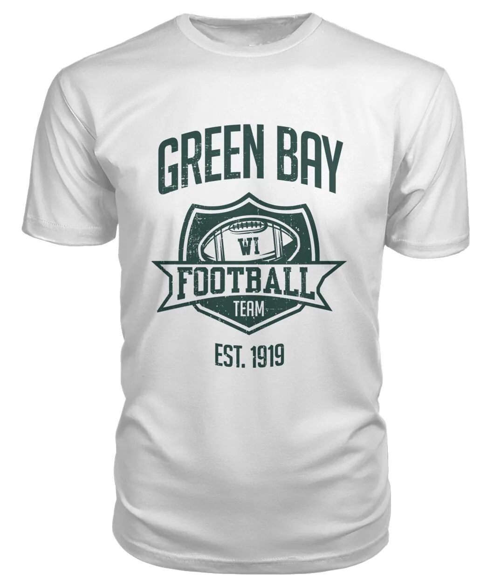
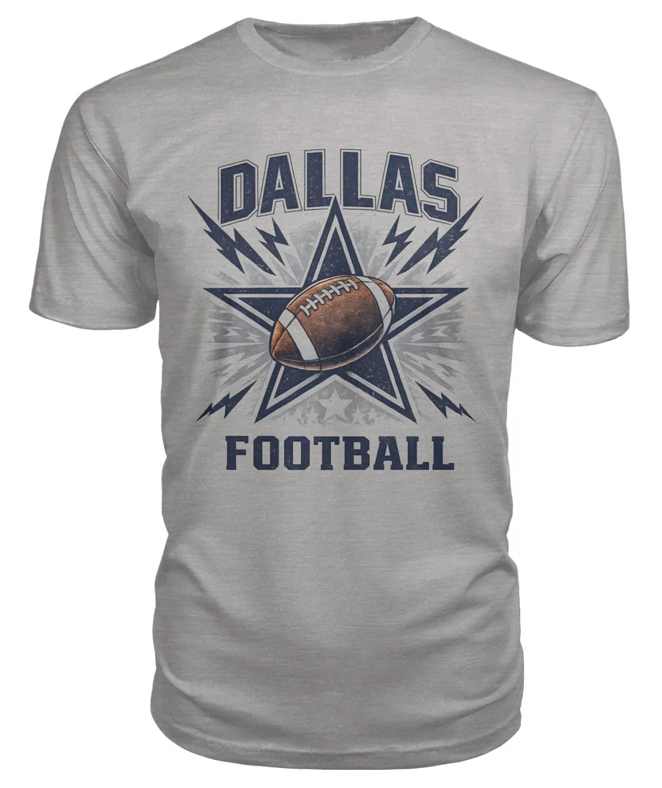
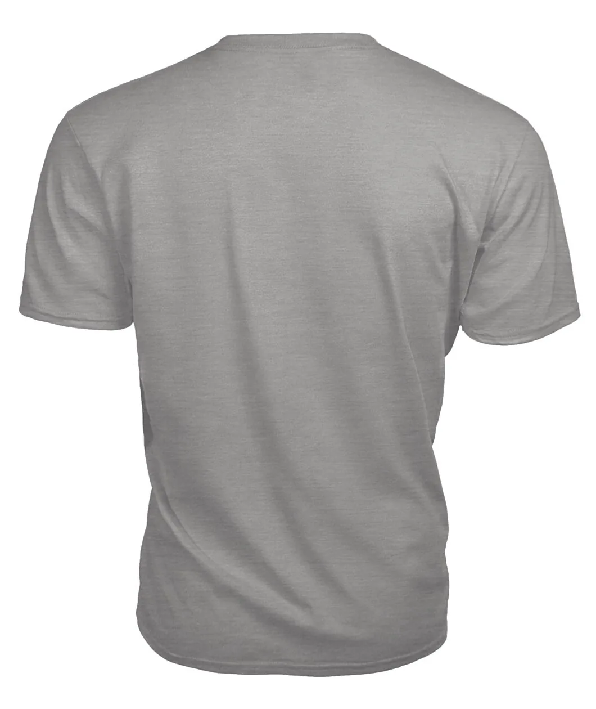
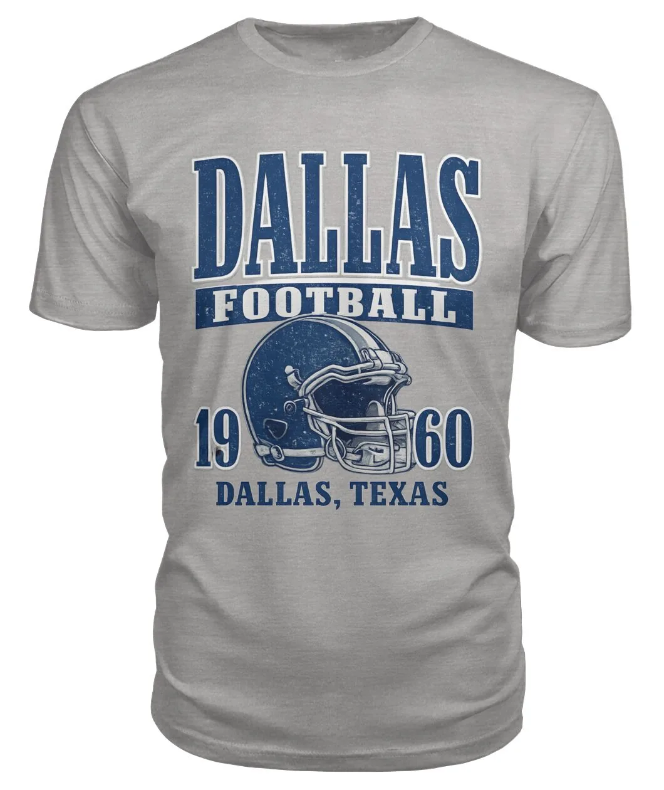
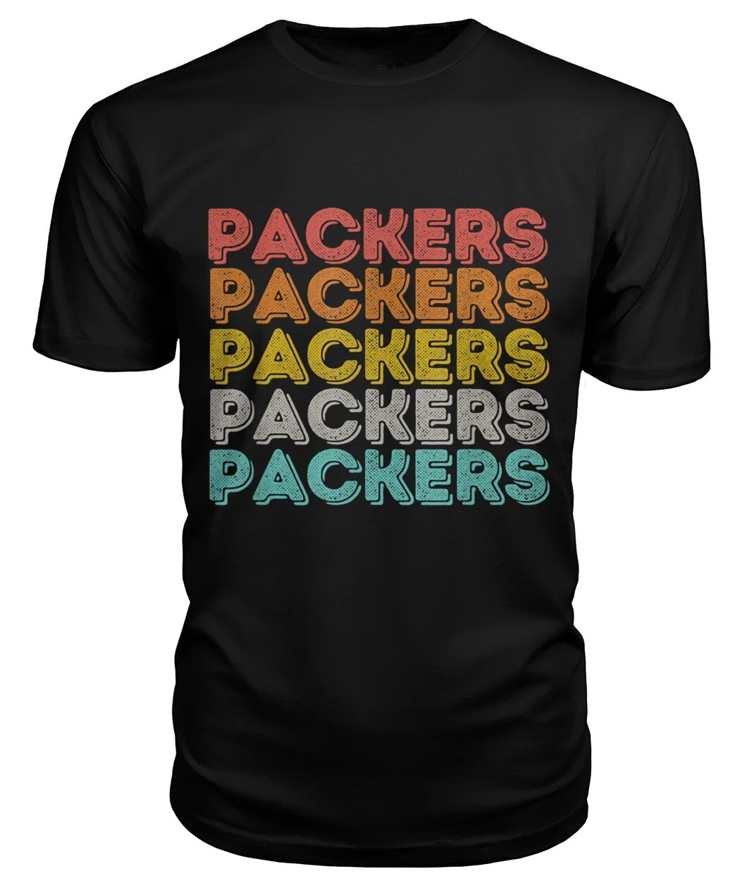
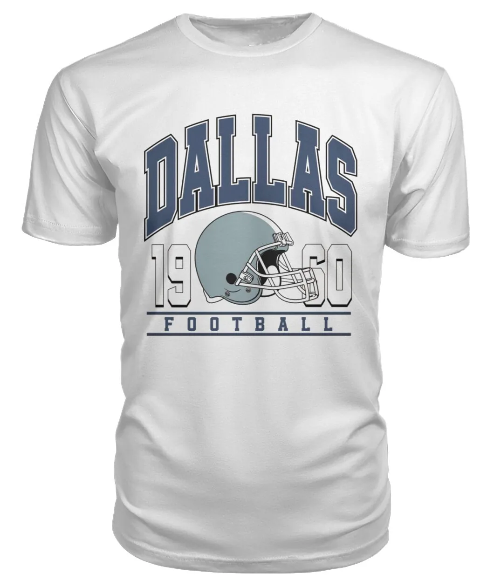
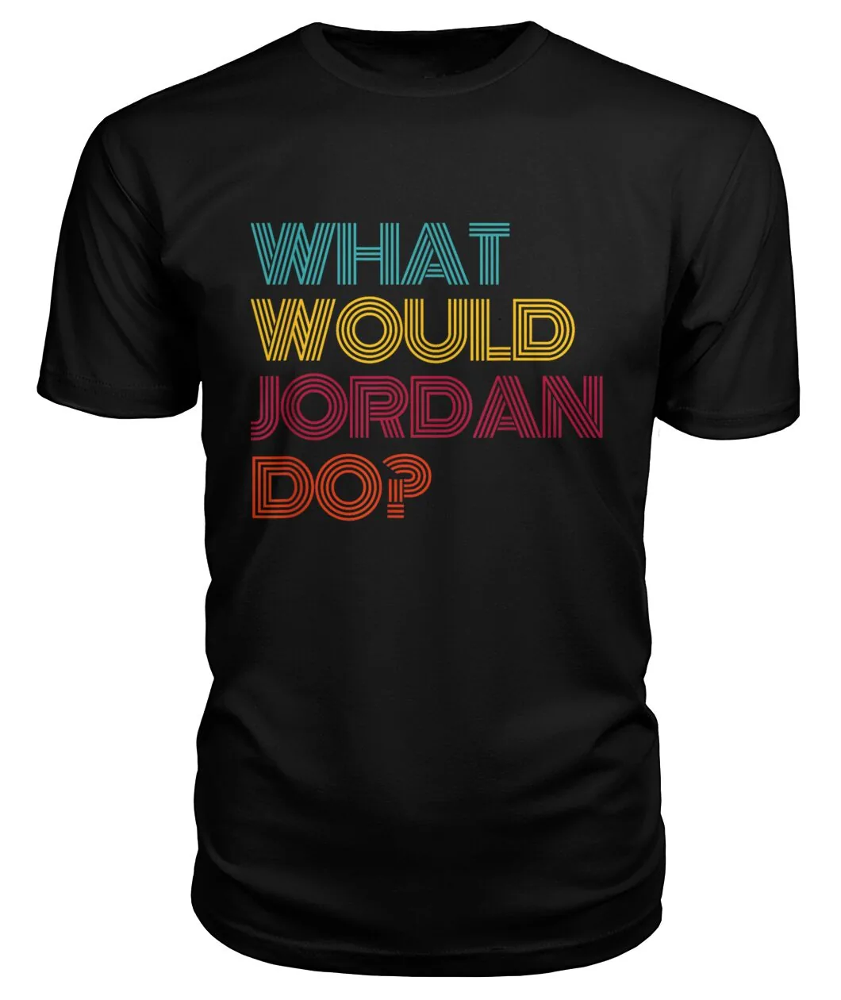
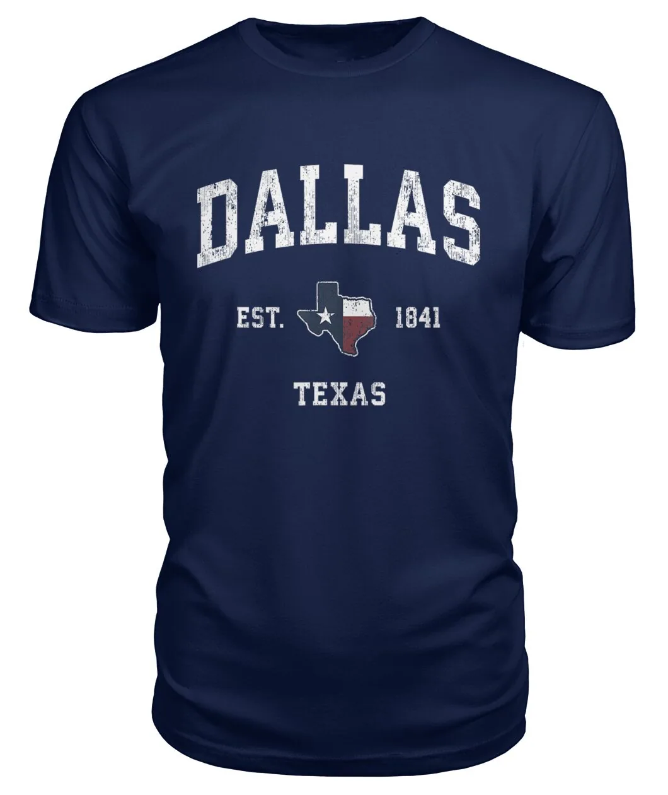
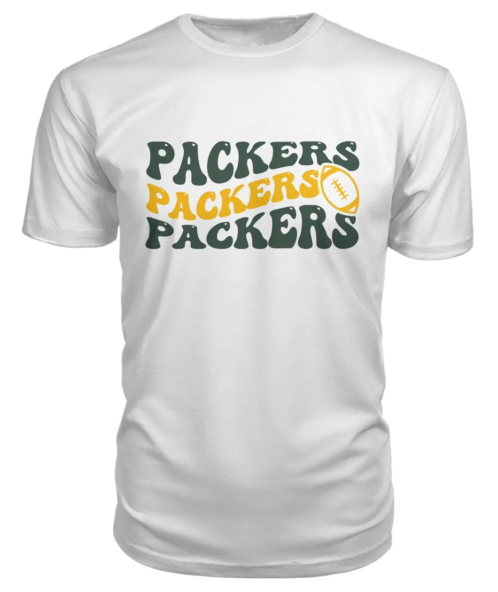

Vintage


Vintage is fan apparel's fastest-growing style lane - retro sports designs now sit at the center of everyday streetwear, not just memorabilia tables. This is our old-school shelf: founding-year lettering, retro athletic type and classic program-cover artwork across Cleveland, Green Bay, Dallas and Michigan. All of it brand new and printed on demand - the vintage is in the design, never a false claim about the shirt.
Heritage years. Est. 1946 Cleveland and Est. 1919 Green Bay lettering wears a founding date like a varsity patch - the reference fans read instantly.
Retro athletic type. Stacked repeats, wavy grooves and 1960s helmet line work borrowed from old pennants and warm-up graphics.
Texas and campus pride. State-flag script and vintage collegiate vibes for the Dallas and Michigan faithful.




















Every piece is printed after you order it by our fulfilment partners, so nothing here is a used garment repurposed with a story. What you get is modern fabric and print with designs that look like they have been in the family since the Eisenhower era. Pair with the funny football shirts for the full locker, or read the buying guides for sizing and garment picks.
No - and we will never pretend otherwise. Every shirt here is brand new and printed to order; the designs are vintage-inspired: founding-year lettering, retro athletic type and old-program artwork. For actual second-hand vintage, the resale market is where to look.
The founding years fans wear as heritage - 1946 for Cleveland, 1919 for Green Bay - come from club history and appear as text in original artwork. They are used descriptively; no official logos or marks are printed.
Prints are modern direct-to-garment transfers, so they wash like new apparel - the faded look lives in the artwork, not the ink. Wash inside out in cold water to keep it sharp.
Many designs print on sweatshirts and hoodies as well as tees. The product page shows every garment style that design offers, with the size guide for fit.

Your nickname, catchphrase or team slogan - printed on tees, hoodies, mugs & more. No minimum order.